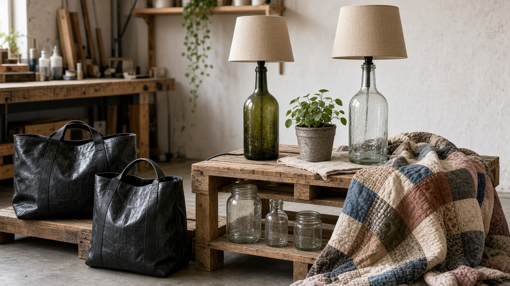
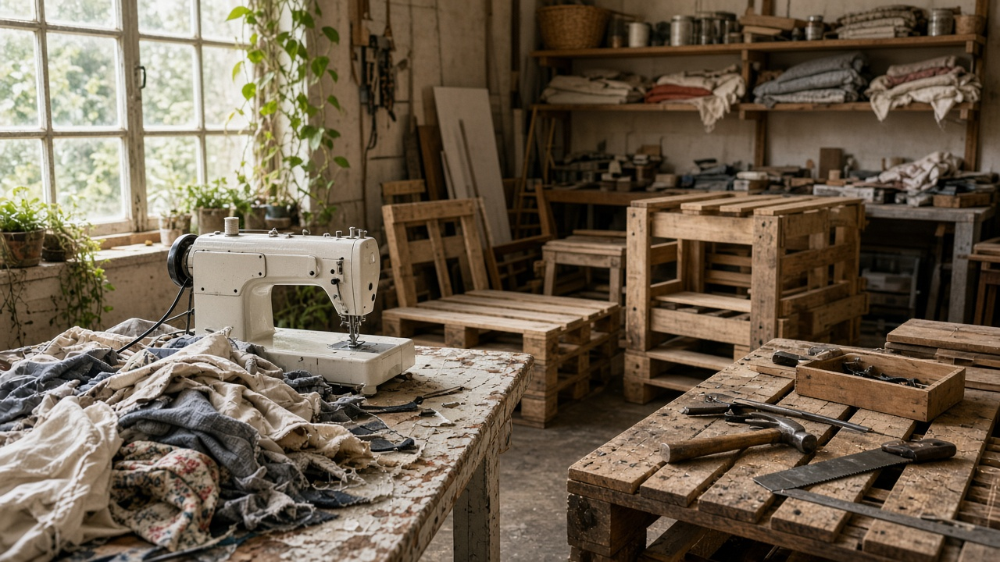
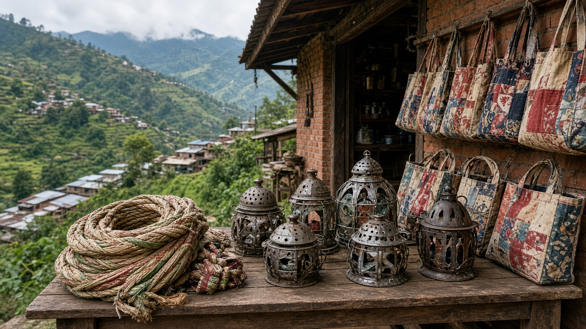

Upcycling and Creative Reuse
Published on August 19, 2026

Upcycling and creative reuse transform discarded materials into products of equal or higher value without breaking them down through industrial recycling processes. Artists, designers, and entrepreneurs repurpose glass bottles into lamps, tire tubes into bags, pallet wood into furniture, and fabric scraps into quilts or fashion accessories. Unlike downcycling, which often yields lower-grade material, upcycling celebrates the existing form, color, and texture of items, extending their cultural and economic life while diverting waste from landfills and incinerators.
Creative reuse builds local economies through craft cooperatives, social enterprises, and online marketplaces that connect makers with conscious consumers. Workshops in schools and community centers teach repair, sewing, and basic woodworking skills that empower people to see waste as raw material rather than trash. In Nepal and similar contexts, traditional practices such as making rope from rice sacks or decorative items from metal scraps align naturally with upcycling values. Scaling these activities requires quality standards, fair pricing, and design innovation so that upcycled goods compete on durability and aesthetics, not charity alone.
Upcycling complements formal recycling by handling items too contaminated, mixed, or small-batch for conventional facilities. It also reduces energy demand compared to melting or pulping materials anew. Policy support can include micro-grants for maker spaces, inclusion in green procurement catalogs, and recognition at tourism and handicraft fairs. When paired with education on consumption habits, upcycling shifts cultural attitudes toward valuing materials and craftsmanship. By turning yesterday's discards into tomorrow's cherished objects, creative reuse advances circular-economy goals while celebrating human ingenuity and local identity.

अपसाइकलिङ र सर्जनात्मक पुन: प्रयोगले त्यागिएका सामग्रीलाई औद्योगिक पुन: चक्रण बिना नै बराबर वा अधिक मूल्यका उत्पादनमा रूपान्तरण गर्छ। कलाकार, डिजाइनर र उद्योगपतिहरूले सिसा बोतललाई बत्ती, टायर ट्युबलाई झोला, प्यालेट काठलाई फर्निचर र कपडाका टुक्रालाई क्विल्ट वा फेसन सामग्री बनाउँछन्। डाउनसाइकलिङले प्राय: निकृष्ट स्तरको सामग्री दिन्छ, अपसाइकलिङले वस्तुको पहिलेको आकार, रङ र बनावटलाई महत्त्व दिन्छ, सांस्कृतिक र आर्थिक जीवन लम्ब्याउँछ र ल्यान्डफिल र दहन स्थलबाट फोहोर हटाउँछ।
सर्जनात्मक पुन: प्रयोगले शिल्प सहकारी, सामाजिक उद्यम र अनलाइन बजारमार्फत स्थानीय अर्थतन्त्र बढाउँछ, जसले सिर्जनकर्ता र सचेत उपभोक्तालाई जोड्छ। विद्यालय र सामुदायिक केन्द्रका कार्यशालाले मर्मत, सिलाई र आधारभूत काठकर्म सिकाउँछन्, जसले मानिसलाई फोहोरलाई कच्रा होइन कच्चा सामग्री जस्तो देखाउँछ। नेपाल जस्ता सन्दर्भमा धानको थैला बाट डोरी र धातुका टुक्राबाट सजावटी सामान बनाउने परम्परागत अभ्यास अपसाइकलिङ सिद्धान्तसँग मिल्छ।
अपसाइकलिङले अप्रतिष्ठित, मिश्रित वा सानो ब्याचका सामानलाई परम्परागत सुविधाभन्दा बढी समेटेर औपचारिक पुन: चक्रणलाई पूरक बनाउँछ। नयाँ पगालेर वा पल्प बनाउने भन्दा ऊर्जा माग पनि घट्छ। नीति समर्थनमा निर्माण स्थलका लागि सूक्ष्म अनुदान, हरियो खरिद सूचीमा समावेश र पर्यटन-शिल्पकला मेलामा मान्यता हुन सक्छ। उपभोग अभ्यास शिक्षासँग जोड्दा, अपसाइकलिङले सामग्री र शिल्पकलालाई महत्त्व दिने सांस्कृतिक दृष्टिकोण परिवर्तन गर्छ। हिजोको त्यागिएको सामानलाई भोलिको सराहने योग्य वस्तु बनाएर, सर्जनात्मक पुन: प्रयोगले चक्रिय अर्थतन्त्रका लक्ष्य पूरा गर्छ र मानव चतुराई र स्थानीय पहिचानलाई उज्यालो बनाउँछ।

अपसाइकलिंग और सर्जनात्मक पुन: उपयोग त्यागे गए पदार्थों को औद्योगिक पुन: चक्रण के बिना बराबर या अधिक मूल्य के उत्पाद में बदलते हैं। कलाकार, डिज़ाइनर और उद्योगपति काँच की बोतल से बत्ती, टायर ट्यूब से थैला, पैलेट लकड़ी से फर्नीचर और कपड़े के टुकड़े से क्विल्ट या फैशन सामान बनाते हैं। डाउनसाइकलिंग अक्सर निकृष्ट स्तर की सामग्री देता है, अपसाइकलिंग वस्तु के मौजूदा आकार, रंग और बनावट को महत्व देता है, सांस्कृतिक और आर्थिक जीवन बढ़ाता है और लैंडफिल व दहन स्थल से कचरा हटाता है।
सर्जनात्मक पुन: उपयोग शिल्प सहकारी, सामाजिक उद्यम और ऑनलाइन बाज़ार से स्थानीय अर्थव्यवस्था बढ़ाता है, जो रचनाकार और सचेत उपभोक्ता को जोड़ते हैं। स्कूल और सामुदायिक केंद्र के कार्यशाले मरम्मत, सिलाई और बुनियादी लकड़ी का काम सिखाते हैं, जिससे लोग कचरे को कचरा नहीं कच्चा पदार्थ मानते हैं। नेपाल जैसे संदर्भ में धान के थैलों से डोर और धातु के टुकड़ों से सजावटी सामान बनाने की परंपरागत प्रथा अपसाइकलिंग सिद्धांतों से मिलती है।
अपसाइकलिंग अप्रतिष्ठित, मिश्रित या छोटे बैच के सामान को पारंपरिक सुविधा से अधिक समेटकर औपचारिक पुन: चक्रण का पूरक बनता है। नए पिघलाने या पल्प बनाने की तुलना में ऊर्जा की माँग भी कम होती है। नीति समर्थन में निर्माण स्थल के लिए सूक्ष्म अनुदान, हरित खरीद सूची में शामिल करना और पर्यटन-शिल्पकला मेले में मान्यता हो सकती है। उपभोग की आदतों पर शिक्षा के साथ, अपसाइकलिंग सामग्री और शिल्पकला को महत्व देने वाला सांस्कृतिक दृष्टिकोण बदलता है। कल के त्यागे हुए सामान को आने वाले सम्मानित वस्तु में बदलकर, सर्जनात्मक पुन: उपयोग चक्रीय अर्थव्यवस्था के लक्ष्यों को आगे बढ़ाता है और मानव चतुराई और स्थानीय पहचान को उजागर करता है।